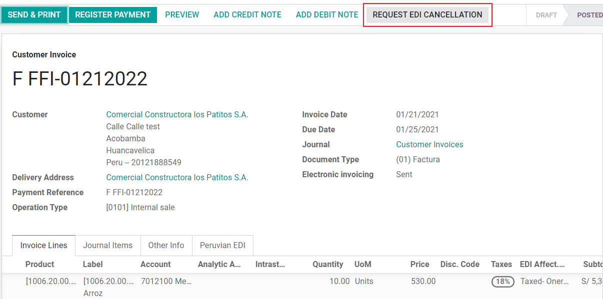
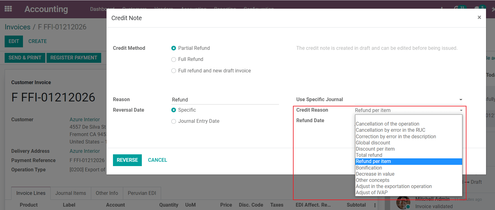

เปรู¶
โมดูล¶
Install the following modules to utilize all the current features of the Peruvian localization.
ชื่อ-นามสกุล |
ชื่อทางเทคนิค |
คำแนะนำ |
|---|---|---|
Peru - Accounting |
|
Adds accounting features for the Peruvian localization, which represent the minimal configuration required for a company to operate in Peru and under the SUNAT regulations and guidelines. The main elements included in this module are the chart of accounts, taxes, document types. |
Peru - E-invoicing |
|
Includes all technical and functional requirements to generate and receive electronic invoices online based on the SUNAT regulations. |
Peru - Accounting Reports |
|
Includes the following financial reports:
|
Peruvian - Electronic Delivery Note |
|
Adds the delivery guide (Guía de Remisión), which is needed as proof that you are sending goods between A and B. It is only when a delivery order is validated that the delivery guide can be created. |
Peruvian eCommerce |
|
Enables the identification type in eCommerce checkout forms and the ability to generate electronic invoices. |
Peruvian - Point of Sale with PE Doc |
|
Enables contact fiscal information to be editable from a PoS Session to generate electronic invoices and refunds. |
Note
Odoo จะติดตั้งแพ็กเกจที่เกี่ยวข้องให้กับบริษัทโดยอัตโนมัติตามประเทศที่เลือกเมื่อสร้างฐานข้อมูล
The Peruvian - Electronic Delivery Guide module depends on the Inventory application to be installed.
See also
แอพทัวร์ - ท้องถิ่นเปรู < https://youtu.be/Ic3mGovkf8Y >`_
Smart Tutorial - Localización de Peru (videos for workflows and configurations)
การกำหนดค่า¶
ติดตั้งโมดูลการแปลเปรู¶
ไปที่ * Apps * และค้นหาเปรูแล้วคลิกติดตั้งในโมดูล EDI เปรูโมดูลนี้ขึ้นอยู่กับ * เปรู - การบัญชี * หากสุดท้ายนี้หากไม่ได้ติดตั้ง Odoo จะติดตั้งโดยอัตโนมัติใน EDI

Note
เมื่อคุณติดตั้งฐานข้อมูลตั้งแต่เริ่มต้นและเลือกเปรูเป็นประเทศ Odooติดตั้งโมดูลฐานอัตโนมัติ: Peru-Accounting
กำหนดค่าบริษัทของคุณ¶
นอกเหนือจากข้อมูลพื้นฐานของ บริษัท แล้วเรายังต้องตั้งค่าเปรูเป็นประเทศ ซึ่งมีความสำคัญต่อการทำงานของใบแจ้งหนี้อิเล็กทรอนิกส์อย่างถูกต้องฟิลด์ ** รหัสประเภทที่อยู่ ** หมายถึงรหัสสถาบันที่ได้รับมอบหมายจดทะเบียน RUC กับ บริษัท โดย SUNAT (ผู้สนับสนุนรายเดียวลงทะเบียน):

Tip
หากไม่ทราบรหัสประเภทที่อยู่คุณสามารถตั้งค่าเป็นค่าเริ่มต้นได้มูลค่า: 0000 ตั้งข้อสังเกตว่าหากใส่ค่าผิด อิเล็กทรอนิกส์อาจมีข้อผิดพลาดในการตรวจสอบใบแจ้งหนี้
Note
ควรตั้งค่า NIF ตามรูปแบบ RUC
รายการบัญชี¶
รายการบัญชีจะถูกติดตั้งเป็นส่วนหนึ่งของชุดข้อมูลโดยปริยายรวมอยู่ในโมดูลโลคัลไลเซชันและบัญชีจะทำแผนที่โดยอัตโนมัติใน:
ภาษี
เจ้าหนี้ปริยาย
ลูกหนี้ปกติ
ตารางบัญชีในเปรูจะขึ้นอยู่กับเวอร์ชันล่าสุด:abbr:"PCGE (Plan Contable General Empression)" แบ่งออกเป็น 2 ประเภท ดังนี้หลายประเภทเข้ากันได้กับการบัญชี NIIF
การตั้งค่าบัญชี¶
หลังจากติดตั้งโมดูลข้อมูลพื้นฐานของ บริษัท ของคุณมีดังต่อไปนี้หลังจากตั้งค่าแล้ว คุณต้องกำหนดค่าองค์ประกอบที่จำเป็นสำหรับใบแจ้งหนี้อิเล็กทรอนิกส์ Forนี่ ไปที่: menusesection:`accounting-->setting-->ภาษาเปรูแปลเป็นภาษาท้องถิ่น
แนวคิดพื้นฐาน¶
ต่อไปนี้เป็นคำที่จำเป็นสำหรับการแปลเปรู:
**EDI **: การแลกเปลี่ยนข้อมูลอิเล็กทรอนิกส์ในที่นี้หมายถึงอิเล็กทรอนิกส์ใบแจ้งหนี้
**OSE **: ผู้ประกอบการบริการอิเล็กทรอนิกส์ "นิยามของ OSE SUNAT"< https://cpe.sunat.gob.pe/aliados/ose#: ~:text = El% 20 ผู้ประกอบการ% 20de% 20 บริการ% 20 ไฟฟ้า% C3% B3nicos% 20 (OSE)% 20es% 20qui% C3% A9n% 20se% 20encarga อื่น ๆ% 20documento% 20que% 20se / 20emita> `_
** ใบรับรอง SOL **: Sunat Operaciones en Línea ผู้ใช้และรหัสผ่าน ใช่จัดทำโดย SUNAT และให้สิทธิ์การเข้าถึงระบบปฏิบัติการออนไลน์
ผู้ให้บริการลายเซ็น¶
เป็นส่วนหนึ่งของข้อกำหนด e-Invoice ของเปรู บริษัท ของคุณต้องเลือกผู้ให้บริการลายเซ็นที่รับผิดชอบเอกสารกระบวนการลงนามและจัดการการตอบสนองการตรวจสอบ SUNAT Odo มีสามตัวเลือก:
IAP (การซื้อในแอป Odoo)
Digiflow
ดวงอาทิตย์
โปรดดูรายละเอียดและข้อควรระวังสำหรับแต่ละตัวเลือก
IAP (การซื้อในแอป Odoo)¶
นี่เป็นตัวเลือกเริ่มต้นและตัวเลือกที่แนะนำโดยคำนึงถึงตัวเลขใบรับรองเป็นส่วนหนึ่งของบริการ

IAP คืออะไร?¶
นี่คือบริการซิกเนเจอร์ของ Odoo โดยตรงซึ่งเป็นบริการที่รอบคอบขั้นตอนต่อไป:
มีใบรับรองใบแจ้งหนี้อิเล็กทรอนิกส์ดังนั้นคุณจึงไม่จำเป็นต้องได้รับคนเดียว
ส่งไฟล์ไปยัง OSE ในกรณีนี้คือ Digiflow
รับการตรวจสอบ OSE และ CDR
มันทำงานอย่างไร?¶
บริการนี้ต้องใช้เครดิตในการประมวลผลไฟล์อิเล็กทรอนิกส์ของคุณOdoo ให้เครดิตฟรี 1,000 เครดิตในฐานข้อมูลใหม่ หลังจากหน่วยกิตเหล่านี้เมื่อใช้จ่ายแล้วต้องซื้อแพ็กเกจเครดิต
เครดิต |
ยูโร |
|---|---|
1000 |
22 |
5000 |
110 |
10, 000 |
220 |
20, 000 |
440 |
มีการใช้วงเงินตามเอกสารแต่ละฉบับที่ส่งให้ สกสค.
Important
หากพบข้อผิดพลาดในการตรวจสอบและต้องส่งเอกสารอีกครั้งเวลาจะมีการเรียกเก็บเครดิตเพิ่มเติม ดังนั้น สิ่งสำคัญคือตรวจสอบข้อมูลทั้งหมดให้ถูกต้องก่อนส่งเอกสารให้OSE。
นายต้องทำอะไร?¶
ใน Odoo เมื่อสัญญาองค์กรของคุณเปิดใช้งานแล้ว คุณสามารถเริ่มต้นที่โปรดักชั่น,คุณต้องซื้อพอยท์หลังจาก 1,000 ยอดใช้จ่ายครบ
เนื่องจาก Digiflow เป็น OSE ที่ใช้ใน IAP คุณต้องเชื่อมโยงเป็นOSE อย่างเป็นทางการสำหรับ บริษัท ของคุณบนเว็บไซต์ SUNAT มันง่ายมากกระบวนการ สำหรับข้อมูลเพิ่มเติมโปรดดูที่ คู่มือพันธมิตร OSE< https://drive.google.com/file/d/1BkrMTZIiJyi5XI0lGMi3rbMzHddOL1pa/view?usp=sharing >`_.
ลงทะเบียน Digiflow เป็น PSE ที่ได้รับอนุญาตโปรดตรวจสอบ "คู่มือพันธมิตร PSE"< https://drive.google.com/file/d/1QZoqWvtQERpS0pqp6LcKmw7EBlm9EroU/view?usp=sharing >`_.
Digiflow¶
ตัวเลือกนี้สามารถใช้เป็นทางเลือกแทนการใช้บริการ IAPคุณสามารถส่งการตรวจสอบเอกสารไปยัง Digiflow ได้โดยตรง ในกรณีนี้คุณต้องพิจารณา:
ซื้อใบรับรองดิจิตอลของคุณเอง: รายละเอียดเพิ่มเติมเกี่ยวกับใบรับรองอย่างเป็นทางการรายชื่อผู้ขายและกระบวนการได้มาซึ่งโปรดดูที่ "SUNAT DIGITAL"ซีเรียม< https://cpe.sunat.gob.pe/informacion_general/certificados_digitales/ >`_.
ทำสัญญาบริการโดยตรงกับ "Digiflow"< https://www.digiflow.pe/ >`_.
มีใบรับรอง SOL ของคุณ

ดวงอาทิตย์¶
เป็นไปได้หาก บริษัท ของคุณต้องการลงนามโดยตรงกับ SUNATเลือกตัวเลือกนี้ในการปรับแต่ง ในกรณีนี้คุณต้องการพิจารณา: - ยอมรับกระบวนการรับรองของ SUNAT
ซื้อใบรับรองดิจิตอลของคุณเอง: รายละเอียดเพิ่มเติมเกี่ยวกับใบรับรองอย่างเป็นทางการรายชื่อผู้ขายและกระบวนการได้มาซึ่งโปรดดูที่ "SUNAT DIGITAL"ซีเรียม< https://cpe.sunat.gob.pe/informacion_general/certificados_digitales/ >`_.
ใบรับรอง SOL สำหรับคุณ
Important
เมื่อใช้การเชื่อมต่อโดยตรงกับ SUNAT ผู้ใช้ SOL ต้องตั้งค่าบริษัท RUT + รหัสผู้ใช้ ตัวอย่าง: 20121888549JOHNSMITH
สภาพแวดล้อมการทดสอบ¶
Odoo มีสภาพแวดล้อมการทดสอบที่สามารถใช้งานได้ในบริษัทเริ่มผลิต
เมื่อใช้สภาพแวดล้อมการทดสอบและลายเซ็น IAP คุณไม่จำเป็นต้องซื้อคะแนนทดสอบสำหรับธุรกรรมของคุณเนื่องจากธุรกรรมทั้งหมดได้รับการยืนยันแล้วผิดนัดชำระหนี้
Tip
โดยค่าเริ่มต้นฐานข้อมูลจะถูกตั้งค่าให้ทำงานในสภาพแวดล้อมการผลิตโปรดตรวจสอบให้แน่ใจว่าได้เปิดใช้งานสามารถเลือกโหมดการทดสอบได้หากต้องการ
ใบรับรอง¶
หากคุณไม่ได้ใช้ Odoo IAP เพื่อสร้างใบแจ้งหนี้อิเล็กทรอนิกส์ลายเซ็น, ต้องมีใบรับรองดิจิตอลที่มีนามสกุล .pfxดำเนินการต่อส่วนนี้และโหลดไฟล์และรหัสผ่านของคุณ

หลายสกุลเงิน¶
The official currency exchange rate in Peru is provided by the SUNAT. Odoo can connect directly to its services and get the currency rate either automatically or manually.

ดูส่วนถัดไปของเอกสารของเราสำหรับข้อมูลเพิ่มเติมเกี่ยวกับ: doc:`หลายสกุลเงิน</ การบัญชี / การเริ่มต้น / หลายสกุลเงิน > `.
กำหนดค่าข้อมูลหลัก¶
ภาษี¶
ในฐานะที่เป็นส่วนหนึ่งของโมดูล Localization ภาษีจะถูกสร้างขึ้นโดยอัตโนมัติโดยบัญชีการเงินที่เกี่ยวข้องและการกำหนดค่าใบแจ้งหนี้อิเล็กทรอนิกส์

การกำหนดค่า EDI¶
สามสนามใหม่ที่จำเป็นเป็นส่วนหนึ่งของการกำหนดค่าภาษีใบแจ้งหนี้อิเล็กทรอนิกส์ภาษีที่สร้างขึ้นโดยค่าเริ่มต้นมีข้อมูลนี้แต่ถ้าคุณสร้างภาษีประเภทใหม่ให้แน่ใจว่าคุณกรอกข้อมูลในช่องต่อไปนี้:

ฐานะทางการเงิน¶
เมื่อติดตั้งรวมสองสถานะทางการเงินที่สำคัญโดยค่าเริ่มต้นการแปลเป็นภาษาเปรู
**Extranjero - Exportación **: การตั้งค่าสถานะทางการเงินนี้สำหรับลูกค้าการค้าส่งออก
** ท้องถิ่นเปรู **: ตั้งค่าสถานะทางการเงินนี้สำหรับลูกค้าในท้องถิ่น
ประเภทของเอกสาร¶
ในบางประเทศในละตินอเมริกา รวมทั้งเปรู นักบัญชีบางคนรายการต่างๆ เช่น ใบแจ้งหนี้ และใบเรียกเก็บเงินจากผู้ขาย จำแนกตามเอกสารชนิดที่กำหนดโดยกระทรวงการคลังของรัฐบาลในกรณีนี้ทำโดยพระอาทิตย์
เอกสารแต่ละประเภทสามารถมีลำดับที่ไม่ซ้ำกันในแต่ละไดอารี่การจัดสรร ในฐานะที่เป็นส่วนหนึ่งของการแปลภาษาเอกสารประเภทรวมถึงประเทศที่มีเอกสารบังคับ ข้อมูลถูกสร้างขึ้นแล้วดำเนินการโดยอัตโนมัติเมื่อติดตั้งโมดูลตำแหน่ง
โดยค่าเริ่มต้นข้อมูลที่จำเป็นสำหรับประเภทของเอกสารจะรวมอยู่แล้ว ดังนั้นผู้ใช้ไม่จำเป็นต้องกรอกข้อมูลในมุมมองนี้:

Warning
เอกสารที่รองรับสำหรับใบแจ้งหนี้ของลูกค้าในปัจจุบันคือ: ใบแจ้งหนี้, Boleta,สลิปเดบิตและเครดิต
การขายวารสาร¶
เมื่อสร้างบันทึกการขายคุณต้องกรอกข้อมูลต่อไปนี้:นอกจากฟิลด์มาตรฐานในวารสาร
การใช้เอกสาร¶
ฟิลด์นี้ใช้เพื่อกำหนดว่าการทำบัญชีรายวันใช้ประเภทเอกสารหรือไม่ มันก็แค่เหมาะสำหรับการซื้อและขายบันทึกประจำวันที่สามารถเกี่ยวข้องกับชุดเอกสารประเภทต่างๆที่มีอยู่ในเปรู Byโดยค่าเริ่มต้นบันทึกการขายที่สร้างขึ้นทั้งหมดจะใช้เอกสาร
การแลกเปลี่ยนข้อมูลอิเล็กทรอนิกส์¶
ส่วนนี้แสดงขั้นตอนการทำงานของ EDI ที่ใช้ในใบแจ้งหนี้ของเปรูเราต้องเลือก "เปรู UBL 2.1"

Warning
ตามค่าเริ่มต้นค่า Factur-X (FR) จะแสดงอยู่เสมอเพื่อให้แน่ใจว่าคุณสามารถยกเลิกการเลือกด้วยตนเอง
คู่หู¶
ประเภทโลโก้และภาษีมูลค่าเพิ่ม¶
เป็นส่วนหนึ่งของการแปลเปรูโดยSUNAT สามารถพบได้ในแบบฟอร์มพันธมิตรและข้อมูลนี้คือสำหรับบริษัทผู้ส่งและลูกค้าโปรดตรวจสอบให้แน่ใจว่าได้กรอกข้อมูลนี้ลงในบันทึก

ศูนย์ผลิตภัณฑ์¶
นอกเหนือจากข้อมูลพื้นฐานในผลิตภัณฑ์ของคุณเปรูแปลเป็นภาษาท้องถิ่นรหัส UNSPC บนผลิตภัณฑ์เป็นค่าที่จำเป็นกำหนดค่าแล้ว

การใช้งานและการทดสอบ¶
ใบแจ้งหนี้ของลูกค้า¶
องค์ประกอบ EDI¶
หลังจากกำหนดค่าข้อมูลหลักแล้ว คุณสามารถสร้างใบแจ้งหนี้ได้จากใบสั่งขายหรือคู่มือของคุณ นอกเหนือจากข้อมูลใบแจ้งหนี้พื้นฐานอธิบายโดย: doc: หน้าของเราเกี่ยวกับกระบวนการออกใบแจ้งหนี้<../ บัญชี / ลูกค้า _ ใบแจ้งหนี้ / ภาพรวม > `, มีหลายช่องเป็นส่วนหนึ่งของ EDI เปรู:
** ประเภทเอกสาร **: ค่าเริ่มต้นคือ "Factura Electronica" แต่คุณสามารถหากต้องการให้เปลี่ยนประเภทเอกสารด้วยตนเองเช่นเลือก Boleta

**ประเภทการดำเนินงาน **: ค่านี้เป็น e-Invoice และแสดงถึงประเภทของการทำธุรกรรมและค่าเริ่มต้นคือ "ขายภายใน" แต่สามารถเลือกค่าอื่นได้ด้วยตนเองเมื่อต้องการ เช่น การส่งออกสินค้า

เหตุผลที่ EDI กระทบ: ในบรรทัดใบแจ้งหนี้นอกเหนือจากภาษีมีช่องว่าง "EDI Impact Reasons" ที่กำหนดขอบเขตภาษีอ้างอิงจากรายชื่อ SUNAT ที่แสดง ภาษีทั้งหมดที่โหลดโดยค่าเริ่มต้นเกี่ยวข้องกับเหตุผลทางอารมณ์ EDI เริ่มต้นหากคุณต้องการคุณสามารถเลือกใบแจ้งหนี้ด้วยตนเองเมื่อสร้างใบแจ้งหนี้

การตรวจสอบใบแจ้งหนี้¶
เมื่อคุณตรวจสอบว่าข้อมูลทั้งหมดในใบแจ้งหนี้ถูกต้องแล้วคุณสามารถดำเนินการตรวจสอบ การดำเนินการนี้ลงทะเบียนบัญชีย้ายและเรียกใช้ขั้นตอนการทำงาน e-Invoice ส่งไปยัง OSE และ SUNAT นี่ด้านบนของใบแจ้งหนี้แสดงข้อความต่อไปนี้:

อะซิงโครนัสหมายความว่าเอกสารอยู่ในมีการส่งใบแจ้งหนี้ไปแล้ว
สถานะใบแจ้งหนี้อิเล็กทรอนิกส์¶
** เพื่อส่ง **: หมายความว่าไฟล์พร้อมส่งไปยัง OSE, นี้สามารถทำได้โดยอัตโนมัติโดย Odoo โดยใช้ cron ที่ทำงานทุกชั่วโมงหรือผู้ใช้งานสามารถส่งได้ทันทีโดยคลิกที่ปุ่ม Send Now

ส่งแล้ว: หมายความว่าเอกสารได้ถูกส่งไปยัง OSE เรียบร้อยแล้วตรวจสอบแล้ว ไฟล์ ZIP จะถูกดาวน์โหลดและส่งข้อความเป็นส่วนหนึ่งของการตรวจสอบมีการบันทึกไว้ในแชตที่ระบุว่า การตรวจสอบความถูกต้องของรัฐบาล

สถานะ e-Invoice ยังคงเหมือนเดิมหากมีการตรวจสอบผิดพลาด"จะส่ง" เพื่อแก้ไขและส่งใบแจ้งหนี้อีกครั้ง
Warning
ใช้วงเงิน 1 วงเงิน ทุกครั้งที่ส่งเอกสารไปตรวจสอบความรู้สึกนี้หากตรวจพบข้อผิดพลาดในใบแจ้งหนี้และส่งอีกครั้งเวลา ทั้งหมดใช้หน่วยกิตไป 2 หน่วยกิต
ข้อผิดพลาดทั่วไป¶
มีหลายเหตุผลที่ OSE หรือ SUNAT ปฏิเสธเมื่อเกิดเหตุการณ์นี้ขึ้น Odoo จะส่งข้อความด้านบนของใบแจ้งหนี้ที่ระบุว่ารายละเอียดข้อผิดพลาดและเคล็ดลับในการแก้ไขปัญหาในกรณีที่พบบ่อยที่สุด
หากคุณได้รับข้อผิดพลาดในการตรวจสอบคุณมีสองทางเลือก:
ในกรณีที่เกิดข้อผิดพลาดกับคู่ค้าลูกค้าหรือภาษีที่คุณสามารถใช้การเปลี่ยนแปลงในบันทึก (เช่นลูกค้าระบุประเภท), คลิกที่ปุ่มลองอีกครั้งเมื่อเสร็จสิ้น
หากข้อผิดพลาดเกี่ยวข้องกับข้อมูลบางอย่างที่บันทึกไว้ในใบแจ้งหนี้โดยตรง(ประเภทการดำเนินงาน บรรทัดใบแจ้งหนี้ขาดข้อมูล),ทางออกที่ถูกต้องคือหากต้องการรีเซ็ตใบแจ้งหนี้เป็นแบบร่าง ให้ใช้การเปลี่ยนแปลงและส่งใบแจ้งหนี้เพื่อนำส่งให้ SUNAT ตรวจสอบอีกครั้ง

สำหรับข้อมูลเพิ่มเติมโปรดดูที่ "ข้อผิดพลาดทั่วไปใน SUNAT"< https://www.nubefact.com/codigos-error-sunat/ >`_.
รายงานใบแจ้งหนี้ PDF¶
ใบแจ้งหนี้ PDF หลังจากที่ SUNAT ยอมรับและตรวจสอบใบแจ้งหนี้แล้วสามารถพิมพ์รายงานได้ รายงานประกอบด้วย QR Code ที่ระบุว่าใบแจ้งหนี้เป็นเอกสารทางการเงินที่ถูกต้อง

คะแนน IAP¶
Odoo's e-IAP มอบ 1,000 คะแนนฟรีหลังจากนี้บริโภคในฐานข้อมูลการผลิตของคุณ บริษัท ของคุณจะต้องเพื่อประมวลผลธุรกรรมของคุณ
เมื่อเครดิตของคุณหมดป้ายแดงจะปรากฏในใบแจ้งหนี้ที่ระบุความต้องการเครดิตเพิ่มเติมที่คุณสามารถซื้อได้อย่างง่ายดายเข้าถึงลิงก์ที่ให้ไว้ในข้อความ

บริการ IAP รวมแพคเกจตามราคาที่แตกต่างกันเรียนคะแนน รายการราคาใน IAP จะแสดงในสกุลเงินยูโรเสมอ
กรณีการใช้งานพิเศษ¶
ขั้นตอนการยกเลิก¶
บางกรณีจำเป็นต้องยกเลิกใบแจ้งหนี้ เช่น เมื่อใบแจ้งหนี้เป็นการสร้างขึ้นโดยมิชอบ หากมีการส่งใบแจ้งหนี้แล้วและได้รับการตรวจสอบจากสำหรับ SUNAT วิธีที่ถูกต้องคือคลิกที่ปุ่ม "Request"การยกเลิก:
หากต้องการยกเลิกใบแจ้งหนี้ โปรดระบุเหตุผลในการยกเลิก
สถานะใบแจ้งหนี้อิเล็กทรอนิกส์¶
** การยกเลิก **: คำขอยกเลิกพร้อมส่งไปยังOSE ซึ่งสามารถทำได้โดยอัตโนมัติด้วย * cron * โดย Odooทำงานชั่วโมงละครั้งหรือผู้ใช้สามารถส่งได้ทันทีด้วยการคลิกปุ่ม "ส่งเดี๋ยวนี้" เมื่อส่งไปแล้วตั๋วยกเลิกจะถูกสร้างขึ้นเป็นผลลัพธ์ข้อความถัดไปและไฟล์ CDR จะถูกบันทึกไว้ในประวัติการแชท:
ยกเลิกแล้ว: แจ้งยกเลิกมาที่ OSEได้รับการตรวจสอบเรียบร้อยแล้ว ในฐานะที่เป็นส่วนหนึ่งของการตรวจสอบไฟล์ ZIP เป็นหลังจากดาวน์โหลดข้อความจะถูกบันทึกไว้ในห้องสนทนาที่ระบุว่าถูกต้องการตรวจสอบของรัฐบาล

Warning
การยกเลิกคำขอแต่ละครั้งจะใช้วงเงินสินเชื่อ
Export invoices¶
โปรดพิจารณาปัจจัยต่อไปนี้ในการสร้างใบแจ้งหนี้ส่งออกข้อควรระวัง:
ประเภทบัตรประชาชนของลูกค้าต้องเป็นบัตรประชาชนต่างประเทศ
ประเภทของการดำเนินการในใบแจ้งหนี้ต้องเป็นประเภทการส่งออก
ภาษีที่รวมอยู่ในบรรทัดใบแจ้งหนี้ควรเป็นภาษี EXP

การชำระเงินล่วงหน้า¶
สร้างใบแจ้งหนี้การชำระเงินล่วงหน้าและใช้การชำระเงินที่เกี่ยวข้อง
สร้างใบแจ้งหนี้สุดท้ายโดยไม่คำนึงถึงการชำระเงินล่วงหน้า
สร้างใบเครดิตสำหรับใบแจ้งหนี้สุดท้ายที่มียอดการชำระเงินล่วงหน้า
ตรวจสอบ L/C กับใบแจ้งหนี้ขั้นสุดท้าย
ยอดคงเหลือในใบแจ้งหนี้สุดท้ายจะต้องชำระเป็นประจำธุรกรรมการชำระเงิน
ใบแจ้งหนี้ที่ไม่ดี¶
เมื่อสร้างใบแจ้งหนี้ที่ถูกปฏิเสธโปรดพิจารณาสิ่งที่ต้องพิจารณาต่อไป
ผลิตภัณฑ์ทั้งหมดที่รวมอยู่ในใบแจ้งหนี้จะต้องกำหนดค่าฟิลด์ต่อไปนี้:

ประเภทของการดำเนินการในใบแจ้งหนี้ต้องเป็น "1001" ``

หมายเหตุเครดิต¶
เมื่อต้องการแก้ไขหรือคืนเงินสำหรับใบแจ้งหนี้ที่ตรวจสอบแล้วความคิดเห็นจะต้องถูกสร้างขึ้น, การทำเช่นนี้เพียงแค่คลิกที่ปุ่ม "เพิ่มความคิดเห็นเครดิต",ส่วนหนึ่งของการแปลเปรูที่คุณต้องพิสูจน์เหตุผลของเครดิตเลือกตัวเลือกจากรายการ
Tip
เมื่อสร้างสลิปเครดิตใบแรกให้เลือกวิธีการให้เครดิต: ส่วนการคืนเงินซึ่งช่วยให้คุณสามารถกำหนดลำดับเครดิตได้
โดยค่าเริ่มต้นตั๋วสินเชื่อจะถูกตั้งค่าในประเภทเอกสาร:

เพื่อให้ขั้นตอนการทำงานสมบูรณ์ทำตามคำแนะนำต่อไปนี้: doc:`หน้าเว็บของเราเกี่ยวกับบันทึกเครดิต</ บัญชี / ลูกค้า _ ใบแจ้งหนี้ / ประวัติเครดิต > `.
Note
ขั้นตอนการทำงานของ EDI ของ Credit Slip เหมือนกับใบแจ้งหนี้
ใบแจ้งขอยืม/ใบแจ้งหนี้¶
เป็นส่วนหนึ่งของการแปลเปรูนอกเหนือจากและยังสามารถสร้างสลิปเดบิตได้อีกด้วย เพื่อการนี้เพียงแค่ใช้ปุ่ม "เพิ่มสลิปเดบิต"
โดยค่าเริ่มต้นใบเดบิตจะถูกตั้งค่าไว้ในประเภทเอกสาร
คู่มือการจัดส่งทางอิเล็กทรอนิกส์ 2.0¶
The Guía de Remisión Electrónica (GRE) is an electronic document generated by the shipper to support the transportation or transfer of goods from one place to another, such as a warehouse or establishment. In Odoo, there are several configuration steps needed before you can successfully use this feature.
The use of the guía de remisión electrónica electronic document is mandatory and required by SUNAT for taxpayers who need to transfer their products, except those under the Single Simplified Regime (régimen único simplificado or RUS).
ประเภทของคู่มือการจัดส่ง¶
ผู้ส่ง¶
The Sender delivery guide type is issued when a sale is made, a service is rendered (including processing), goods are assigned for use, or goods are transferred between premises of the same company and others.
แนวทางการจัดส่งนี้ออกโดยเจ้าของสินค้า (เช่น ผู้ส่ง)ที่จุดเริ่มต้นของการจัดส่ง สนับสนุนแนวทางการจัดส่งของผู้ส่งโอดอร์
ผู้ให้บริการ¶
The Carrier delivery guide type justifies the transportation service the driver (or carrier) performs.
แนวทางการจัดส่งนี้ออกโดยผู้ให้บริการและจะต้องออกให้กับแต่ละเมื่อสินค้าผ่านระบบขนส่งสาธารณะ ผู้ส่งสินค้า
Important
Odoo ไม่สนับสนุนแนวทางการจัดส่งของผู้ให้บริการ
See also
หน่วยงานกำกับดูแลอุตสาหกรรมการขนส่ง https://tefacturo.pe/blog/sunat/guia-การโอนเงิน บริษัท อิเล็กทรอนิกส์ / Guia การโอนเงิน บริษัท ขนส่ง /> `_
ประเภทการขนส่ง¶
ส่วนตัว¶
The Private transportation type option is used when the owner transfers goods using their own vehicles. In this case, a sender's delivery guide must be issued.
สาธารณะ¶
เมื่อผู้ให้บริการภายนอกใช้ตัวเลือกประเภทการขนส่ง * สาธารณะ *การเคลื่อนย้ายสินค้า กรณีนี้ต้องออกแนวทางการจัดส่ง 2 ฉบับ คือ 1.คู่มือการจัดส่งของผู้ส่งและคู่มือการจัดส่งของผู้ขนส่ง
ส่งตรงไปยัง SUNAT¶
สร้างใน Odoo ** ｜ GRE ｜ คู่มือการจัดส่งต้อง ** ส่งโดยตรงไม่ว่าผู้ให้บริการเอกสารอิเล็กทรอนิกส์จะเป็น IAP หรือผู้ให้บริการเอกสารอิเล็กทรอนิกส์รายอื่นDigiflow หรือ #SUNAT #
ข้อมูลที่จำเป็น¶
คู่มือ e-Delivery เวอร์ชั่น 2.0 ต้องการข้อมูลเพิ่มเติมเกี่ยวกับการกำหนดค่าโดยรวมยานพาหนะผู้ติดต่อและผลิตภัณฑ์ ใน theในการกำหนดค่าทั่วไปมีความจำเป็นต้องเพิ่มข้อมูลประจำตัวใหม่ดึงข้อมูลจาก #SUNAT #พอร์ทัล
การยกเลิก¶
**** ใบนำส่งสินค้าอิเล็กทรอนิกส์สามารถยกเลิกได้ทั้งผู้ส่งและผู้ขนส่งเพียงปฏิบัติตามเงื่อนไขต่อไปนี้:
การจัดส่งยังไม่เริ่ม
หากเริ่มการจัดส่งสินค้าแล้ว ผู้รับจะต้องเปลี่ยนสินค้าก่อน**ถึงจุดหมายปลายทางสุดท้าย
Important
# SUNAT # ไม่ใช้คำนี้อีกต่อไป #,แต่ตอนนี้ใช้คำว่า เดบาฮา
การทดสอบ¶
✔ SUNAT ✔ ไม่รองรับสภาพแวดล้อมการทดสอบ นั่นหมายความว่าอะไรก็ตามคู่มือการจัดส่งที่สร้างผิดพลาด ** ส่ง ** ไปยัง#แสงแดด #
หากมีการสร้างใบนำส่งสินค้าโดยไม่ถูกต้องในสภาพแวดล้อมดังกล่าวก็เป็นสิ่งจำเป็นลบออกจาก #SUNAT #พอร์ทัล
การกำหนดค่า¶
Important
e-Sender › GRE › ใบนำส่งสินค้าประเภทเดียวที่รองรับในปัจจุบันโอดอร์
คู่มือการจัดส่งขึ้นอยู่กับแอป Odoo*Stock*: guilabel:
l10n_pe_ediและ: guilabel: `l110n_pe`moduleต้องเพิ่มผู้ใช้รายที่สอง** เพื่อสร้างเอกสารอิเล็กทรอนิกส์
ทำตามขั้นตอนด้านล่างเพื่อกำหนดค่า: อ้าง:` e-Invoice <เปรู -การตั้งค่าบัญชี > และ: อ้าง: ข้อมูลหลัก <peru-master_data>,:ref:install<general/install>เปรู - อิเล็กทรอนิกส์โมดูลการจัดส่ง 2.0 (l10n_pe_edi_stock_20)
ถัดไป, คุณต้องดึง * รหัสลูกค้า * และ * ความลับลูกค้า * จาก #SUNAT #.ในการทำเช่นนี้ให้ปฏิบัติตาม "คู่มือบริการแพลตฟอร์มเครือข่าย GRE ใหม่"< https://cpe.sunat.gob.pe/sites/default/files/inline-files/Manual_Servicios_GRE.pdf>`_。
Note
ใน #SUNAT #พอร์ทัลเป็นสิ่งสำคัญที่จะมีการเข้าถึงที่ถูกต้องเปิดใช้งานเนื่องจากอาจแตกต่างจากการตั้งค่าของผู้ใช้ในใบแจ้งหนี้อิเล็กทรอนิกส์
ข้อมูลประจำตัวเหล่านี้ใช้ในการกำหนดค่าภาพรวมของแนวทางการจัดส่งการตั้งค่าจาก: ส่วนเมนู: `การบัญชี -> การกำหนดค่า -> การตั้งค่า ->ใบแจ้งหนี้อิเล็กทรอนิกส์ของเปรู

Note
ต้องปฏิบัติตามรูปแบบ "RUC + UsuarioSol" (เช่น`20557912879SOLUSER) ใช้สำหรับ: guilabel: 'คู่มือผู้ใช้ SOL' ฟิลด์ขึ้นอยู่กับผู้ใช้ที่เลือกเมื่อสร้างใบรับรอง # GRE # API ใน # SUNATประตูมิติ
ผู้ประกอบการ¶
กรณีแนวทางการจัดส่ง,*ผู้ประกอบการ*เป็นผู้ขับขี่ยานพาหนะโดยขนส่งเอกชน
หากต้องการสร้างผู้ประกอบการใหม่ให้ไปที่: menuselection:` ติดต่อ -> สร้างและกรอกรายละเอียดการติดต่อ
ก่อนอื่นให้เลือก: guilabel: "ส่วนบุคคล" เป็น: guilabel: "ประเภท บริษัท " จากนั้นเพิ่มใน: guilabel: "การบัญชี" แท็บ: guilabel: "การตั้งค่าโอเปร่า"ข้อมูลติดต่อ
สำหรับที่อยู่ลูกค้าโปรดตรวจสอบให้แน่ใจว่าฟิลด์ต่อไปนี้ครบถ้วน:
พื้นที่
: guilabel: "หมายเลขภาษี" (: guilabel: "DNI" /: guilabel: "RUC")
:guilabel:` เลขประจำตัวผู้เสียภาษี `

ผู้ให้บริการ¶
ใช้ * ผู้ให้บริการ * เมื่อคู่มือการจัดส่งผ่าน * สาธารณะ * การขนส่ง
หากต้องการสร้างผู้ให้บริการรายใหม่ไปที่: menusesection:` ติดต่อ -> สร้างและกรอกรายละเอียดการติดต่อ
ก่อนอื่นให้เลือก: guilabel: "บริษัท" เป็น: guilabel: "ประเภท บริษัท " แล้ว, เพิ่มthe:guilabel:` หมายเลขทะเบียน MTC',: guilabel:` การอนุญาตนิติบุคคล"และ: guilabel: "หมายเลขการอนุญาต"
สำหรับที่อยู่ บริษัท โปรดตรวจสอบให้แน่ใจว่าฟิลด์ต่อไปนี้ครบถ้วน:
พื้นที่
: guilabel: "หมายเลขภาษี" (: guilabel: "DNI" /: guilabel: "RUC")
:guilabel:` เลขประจำตัวผู้เสียภาษี `

ยานพาหนะ¶
ในการกำหนดค่ายานพาหนะที่มีให้ไปที่: ส่วนการใช้เมนู: `ในสต็อก--> การกำหนดค่า --> ยานพาหนะและกรอกแบบฟอร์มรถข้อมูลที่จำเป็นสำหรับยานพาหนะ:
ชื่อรถ
ป้ายทะเบียนรถ
Ji: M1 หรือ L`
:guilabel:` นิติบุคคลที่ได้รับอนุญาตพิเศษ
:guilabel:` หมายเลขการอนุญาต `
: guilabel:
ผู้ประกอบการเริ่มต้น:guilabel:`บริษัท
Important
มันเป็นสิ่งสำคัญที่จะตรวจสอบ: guilabel: "มันเป็น M1 หรือ L?" หากยานพาหนะน้อยกว่าสี่ล้อ หรือน้อยกว่าแปดที่นั่ง

ผลิตภัณฑ์¶
ในการกำหนดค่าผลิตภัณฑ์ที่พร้อมใช้งานไปที่: menusesection:` ในสต็อก--> ผลิตภัณฑ์" และเปิดผลิตภัณฑ์ที่คุณต้องการกำหนดค่า
ตรวจสอบให้แน่ใจว่าข้อมูลที่เกี่ยวข้องในแบบฟอร์มผลิตภัณฑ์ครบถ้วนกำหนดค่าแล้ว : guilabel: "Partida Arancelaria" (รายการภาษีศุลกากร) ฟิลด์ที่จำเป็นเรียบร้อย
สร้าง GRE¶
หลังจากสร้างสินค้าคงคลังในขั้นตอนการขายกรุณากรอกข้อมูลในฟิลด์ #GRE ที่มุมขวาบนของการโอนแบบฟอร์มของฟิลด์:
:guilabel:` ประเภทการขนส่ง`
:guilabel:` เหตุผลในการย้าย
:guilabel:` วันที่ออกเดินทาง `
ยังต้องกรอก: guilabel: "ยานพาหนะ" และ: guilabel: ฟิลด์ "Operator" ภายใต้แท็บ "Guia de Remision PE"
การส่งมอบต้องทำเครื่องหมาย * สมบูรณ์ * สำหรับ: guilabel: `ทั่วไปปุ่ม Guia de Remision จะปรากฏในเมนูด้านซ้ายของแบบฟอร์มการโอนเงิน

เมื่อ #SUNAT #ตรวจสอบสลิปการโอนเงินอย่างถูกต้อง,XML ที่เกิดขึ้นไฟล์จะพร้อมใช้งานในห้องแชท คุณสามารถพิมพ์ใบนำส่งได้แล้วแสดงรายละเอียดการโอนเงิน และ #SUNAT #Verified QR Code

ข้อผิดพลาดทั่วไป¶
`Prefix สำหรับผลิตภัณฑ์ที่แตกต่างกัน (T001 เป็นตัวอักษร T002 เป็นตัวอักษร) `
ปัจจุบัน Odoo ยังไม่รองรับระบบอัตโนมัติสำหรับคำนำหน้าชื่อสินค้า ซึ่งสามารถทำได้ด้วยตนเองสำหรับแต่ละผลผลิตของผลิตภัณฑ์ นี่ก็ได้สำหรับสินค้าที่ไม่สามารถจัดเก็บได้ อย่างไรก็ตามโปรดจำไว้ว่าจะมีไม่มีการตรวจสอบย้อนกลับ
`2325 - การวัดน้ำหนักรวม - ข้อมูลการเข้าถึง\
ข้อผิดพลาดนี้เกิดขึ้นเมื่อน้ำหนักบนสินค้าถูกตั้งค่าเป็น "0.00" ซ่อมแซมคุณจำเป็นต้องยกเลิกใบนำส่งสินค้าและสร้างขึ้นใหม่ ตรวจสอบให้แน่ใจว่าคุณได้แก้ไขแล้วก่อนที่จะสร้างใบนำส่งสินค้าใหม่น้ำหนักของผลิตภัณฑ์มิฉะนั้นมันจะส่งผลให้เกิดความผิดพลาดเดียวกัน
`JSONDecodeError: ค่าที่คาดหวังเมื่อสร้าง: แถว 1 คอลัมน์ 1 (ชาร์ 0)คู่มือการจัดส่ง
ข้อผิดพลาดนี้มักเกิดขึ้นเนื่องจากปัญหาของผู้ใช้ SOL ยืนยันตัวตนของผู้ใช้การเชื่อมต่อกับ #SUNAT ผู้ใช้งาน SOL จะต้องทำงานร่วมกับรหัสผู้ใช้ RUT + ของ บริษัท ตัวอย่างเช่น "2012188549JOHNSMITH"
`เอกสารที่เกี่ยวข้องกับการทำธุรกรรมทางธุรกิจรูปแบบการสร้าง: ข้อผิดพลาด: เอกสารที่เกี่ยวข้อง
The Related Document Type and Related Document Number fields only apply to invoices and receipts.
400 ข้อผิดพลาดไคลเอ็นต์: ข้อผิดพลาดในการร้องขอ URLข้อผิดพลาดนี้ไม่สามารถแก้ไขได้จาก Odoo; ขอแนะนำให้คุณติดต่อ› SUNAT › และยืนยันผู้ใช้. อาจต้องสร้างผู้ใช้ใหม่
`พบว่าเนื้อหาที่ขึ้นต้นด้วยองค์ประกอบ "cac: BuyerCustomerParty" ไม่ถูกต้อง
ข้อผิดพลาดนี้เกิดขึ้นเมื่อมีการตั้งค่าเหตุผลในการโอนคือ * อื่น ๆ * กรุณาเลือกอีกทางเลือกหนึ่ง ติดตามเอกสารราชการได้ที่ #SUNAT#คู่มือใบนำส่งสินค้า เหตุผลในการโอน * 03 (ขายและจัดส่งไปยังบุคคลที่สาม) *หรือ * 12 (อื่น ๆ ) * ไม่สามารถใช้ได้กับ Odoo เพราะคุณไม่ควรว่างหรือลูกค้าที่ว่างเปล่า
ลูกค้า Duda: ความร่วมมือระหว่าง IAP และ GRE 2.0สำหรับลูกค้าสดที่ใช้ IAP ในทางทฤษฎีจะไม่ใช้เครดิตใด ๆ เพราะมันไม่ผ่าน OSE คือไฟล์เหล่านี้จะถูกส่งตรงไปยัง#แสงแดด #
ข้อผิดพลาดของรูปแบบใบรับรอง GRE 2.0 (ข้อผิดพลาด backtrack)Odoo กำลังโยนข้อผิดพลาดกับ backtrack แทนที่จะเป็นข้อความข้อมูลประจำตัวในฐานข้อมูลมีการกำหนดค่าไม่ถูกต้อง หากเกิดเหตุการณ์ดังกล่าวขึ้นในฐานข้อมูลของคุณ โปรดตรวจสอบข้อมูลประจำตัวของคุณ
e-Invoice สำหรับอีคอมเมิร์ซ¶
ก่อนอื่น:อ้าง:`install<general/install>`อีคอมเมิร์ซในเปรู **("l10n_pe_website_sale") โมดูล
** อีคอมเมิร์ซเปรู ** โมดูลเปิดใช้งานคุณสมบัติและการกำหนดค่าถึง:
อนุญาตให้ลูกค้าสร้างบัญชีออนไลน์เพื่อวัตถุประสงค์ E-Commerce
การสนับสนุน ** อีคอมเมิร์ซ ** ฟิลด์ทางการเงินที่จำเป็นในแอปพลิเคชัน;
รับการชำระเงินสำหรับการสั่งซื้อขายออนไลน์
สร้างเอกสารอิเล็กทรอนิกส์จาก ** E-Commerce** Application
Note
** เปรูอีคอมเมิร์ซ ** โมดูลขึ้นอยู่กับการติดตั้งก่อนหน้านี้** ใบแจ้งหนี้ ** หรือ ** บัญชี ** แอปพลิเคชันและ ** เว็บไซต์ ** แอปพลิเคชัน
การกำหนดค่า¶
การกำหนดค่า เปรู: อ้าง: `ใบแจ้งหนี้อิเล็กทรอนิกส์ <เปรูหลังการบัญชี -การตั้งค่า > `flow เสร็จสิ้น ** การกำหนดค่าต่อไปนี้สำหรับ e-commerce **อัตราการไหล:
:ref:` การลงทะเบียนบัญชีลูกค้า <เครื่องหมายชำระเงิน> `;
: อ้าง:` ใบแจ้งหนี้อัตโนมัติ <การประมวลผล / กฎหมาย> `;
：doc:`..// เว็บไซต์ / อีคอมเมิร์ซ / ผลิตภัณฑ์ `: การตั้งค่า: guilabel: `ใบแจ้งหนี้กลยุทธ์: guilabel: "ปริมาณการสั่งซื้อ" และกำหนดปริมาณที่ต้องการ: guilabel: "ภาษีลูกค้า"
：doc:`/ การชำระเงิน _ ผู้ขาย;
：doc:`..// เว็บไซต์ / อีคอมเมิร์ซ / ชำระเงิน _ การชำระเงิน _ การจัดส่ง / การจัดส่ง: แต่ละวิธีการจัดส่ง: guilabel: "Provider" ฟิลด์ตั้งค่าเป็น: guilabel: "Fixed"ราคา จากนั้นตั้งค่าหนึ่ง: guilabel: "ราคาคงที่" มากกว่า "0.00" (ไม่ใช่ศูนย์) เนื่องจากราคาวิธีการจัดส่งได้เพิ่มลงในบรรทัดใบแจ้งหนี้
Note
`ตลาดปาโก<< https://www.mercadopago.com/ > `_ เป็นผู้ให้บริการชำระเงินออนไลน์รองรับ Odoo ครอบคลุมหลายประเทศสกุลเงินและการชำระเงินวิธีการของละตินอเมริกา
ตรวจสอบให้แน่ใจว่าได้กำหนดไว้ใน: guilabel: "การจัดส่ง": guilabel: "ราคาขาย"ผลิตภัณฑ์ที่ใช้วิธีการจัดส่งเพื่อป้องกันข้อผิดพลาดในการตรวจสอบในใบแจ้งหนี้ระบุว่า #SUNAT #
ในการจัดส่งฟรีลบออกด้วยตนเอง: guilabel: "สินค้าจัดส่ง" หรือใช้อย่างน้อย "0.01 USD" (หนึ่งเซนต์) เพื่อตรวจสอบใบแจ้งหนี้กับ SUNAT
See also
: doc:` ตั้งค่าผู้ให้บริการชำระเงิน Mercado Pago<../ การชำระเงิน _ ผู้ขาย / ร้านค้า _ เว็บไซต์ > `
ขั้นตอนการออกใบแจ้งหนี้สำหรับอีคอมเมิร์ซ¶
เมื่อ: อ้าง: `configurations <peru e-commerce configuration> ตั้งค่าทั้งหมดเสร็จแล้วช่องใส่ข้อมูลทางการเงินจะพร้อมใช้งานในระหว่างขั้นตอนการชำระเงินลูกค้าที่ทำสัญญา
เมื่อลูกค้าป้อนข้อมูลทางการเงินเมื่อเช็คเอาท์และทำธุรกรรมเสร็จเรียบร้อยแล้วเมื่อซื้อใบแจ้งหนี้จะถูกสร้างขึ้นโดยใช้องค์ประกอบที่สอดคล้องกัน #EDI #เลือกประเภทของเอกสารตามหมายเลขประจำตัวผู้เสียภาษี (Boleta/Factorura)（RUC/DNI）。 จากนั้นใบแจ้งหนี้จะต้อง: อ้าง:`ส่งไปยัง OSE และ SUNAT<สถานะใบแจ้งหนี้อิเล็กทรอนิกส์ของเปรู> โดยค่าเริ่มต้นใบแจ้งหนี้ที่ออกทั้งหมดจะเป็นส่งวันละครั้งโดยการดำเนินการที่กำหนดไว้ แต่คุณยังสามารถส่งแต่ละออกใบแจ้งหนี้ด้วยตนเองหากต้องการ
เมื่อใบแจ้งหนี้ผ่าน #SUNAT #Verified ลูกค้าสามารถดาวน์โหลด:file:.zip` ซึ่งมีไฟล์ CDR, XML และ PDF โดยตรงจากลูกค้าเข้าถึงพอร์ทัลโดยคลิกที่: guilabel:`ดาวน์โหลด' ปุ่ม